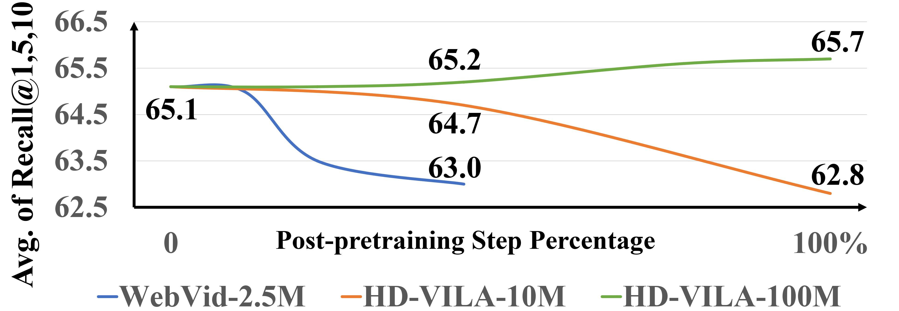
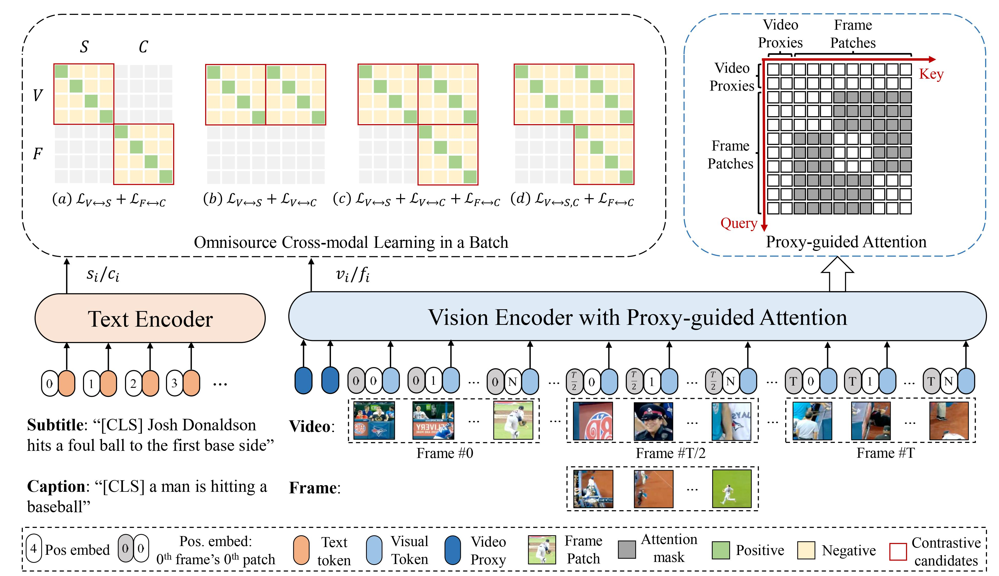

CLIP-ViP¶
Abstract¶
在本论文中，我们通过提出和解决两个问题来应对这一挑战：1）阻碍预训练后 CLIP 提高视频文本任务性能的因素是什么，以及 2）如何减轻这些因素的影响。通过一系列的对比实验和分析，我们发现数据规模和语言来源之间的领域差距有很大的影响。通过这些观察，我们提出了一种基于 CLIP 的配备视频代理机制的多源跨模态学习方法，即 CLIP-ViP。实验结果表明，该方法大大提高了CLIP在视频文本检索中的性能。我们的模型在各种数据集上实现了最先进的结果，包括MSR-VTT、DiDeMo、LSMDC 和 ActivityNet。
Introduction¶
利用现有的强大的图像文本预训练模型进行进一步的视频文本预训练（即后预训练）能够通过良好地利用从图像中学习的知识来降低所需的训练成本。然而，将图像-文本预训练模型与视频-文本数据相适应进行后预训练尚未显示出显著的优势，因此仍在探索之中。CLIP4Clip 进行了一项初步研究，该研究采用了 MeanPool，在 Howto100M 的子集上基于 CLIP 模型对多个帧特征进行平均。直接使用图像-文本预训练模型对于零样本或微调设置都有提升。在本文中，我们旨在探索如何有效地将图像-文本预训练模型应用于视频文本任务（例如，文本到视频检索）的视频语言表示学习。
为了释放视频数据的力量，使图像-文本预训练模型适应后预训练，我们进行了几个初步实验，以找出阻碍后预训练的挑战。首先，我们在不同规模的视频文本数据集上，包括 WebVid-2.5M 和 HD-VILA-100M，探索使用 MeanPool 对 CLIP 进行后预训练。结果表明，数据的规模对视频文本后期预训练至关重要。小规模的数据使模型很容易过度拟合新数据，同时抑制了从图像文本中学习到的知识，降低了性能。其次，我们研究了预训练数据和下游数据之间的语言领域差距。通过计算文本特征聚类上的归一化互信息（NMI），我们发现在大规模视频文本预训练数据中使用的字幕与下游任务中的描述性文本之间存在很大的域差距。
为了减轻上述因素的影响，我们提出了 CLIP-ViP 来将预训练的图像-文本模型 CLIP 用于视频-文本预训练。首先，我们将与下游数据具有较小语言域差距的辅助字幕引入到现有的大规模视频文本数据中。我们没有采用视频字幕模型，该模型可能会通过在具有视频文本下游任务的同一数据集上进行训练而导致数据泄露，并且考虑到更好的视觉字幕能力，我们采用即时字幕模型来生成每个视频中中间帧的辅助字幕。为了使基于 Transformer 的视觉编码器能够以最小的修改处理图像和视频，我们提出了视频代理令牌，并为视觉转换器（ViT）设计了一种代理引导的视频注意力机制。具体而言，在每个块中的注意力计算期间，视频代理令牌可以与所有令牌交互，而补丁令牌仅与视频代理令牌和同一帧内的补丁令牌交互。与普通的视觉转换器相比，我们的视觉编码器只增加了可忽略不计的参数和计算，同时增加了通用性和可扩展性。为了便于同时从字幕帧和视频字幕数据类型中进行跨模态表示学习，我们提出了一种用于预训练的多源跨模态学习（OCL）方法，并研究了一系列变体以找到最佳融合策略。
我们的实验结果表明，我们的方法大大提高了 CLIP 在文本到视频检索任务中的性能。我们还进行了消融研究，以验证我们方法中每个部分的有效性。我们的贡献总结如下：（1）我们是第一个在预训练的图像-文本模型上探索阻碍视频后预训练的因素的人；（2） 我们提出了 CLIP-ViP，它可以有效地利用图像-文本预训练模型进行后预训练；（3） 我们进行了大量的实验来验证我们的方法的有效性。我们的模型在四个广泛使用的基准上以很大的优势优于最先进的结果。
Preliminary Analysis¶
在本节中，我们首先研究了将图像-文本预训练调整为视频-文本后预训练的数据尺度的影响，然后研究了语言域差距如何影响自适应。
Different Data Scales¶
为了研究不同数据尺度的有效性，我们使用 CLIP-ViT-B/32 模型作为基础图像-文本预训练模型，并采用 MeanPool 进行视频自适应，如 CLIP4Clip，将多帧特征平均为视频特征。使用了两个开放域视频文本数据集：WebVid-2.5M，具有 250 万对；HD-VILA-100M，具有 100M 对。我们还采用包含随机 10% 数据的 HD-VILA-100M 的子集（即HD-VILA-10M）作为中间设置。我们在所有设置上运行相同数量的步骤，相当于 HD-VILA-100M 上的一个 epoch。我们从每个视频中均匀采样 12 帧，并将第 5 节中描述的相同超参数应用于所有设置。

在后预训练过程中，我们通过微调 MSR-VTT 文本到视频检索任务来评估预训练的模型。图 1 显示了性能趋势。我们观察到一种过拟合现象，即连续的后预训练会导致性能下降。对于较小的数据（例如 WebVid-2.5M 和 HD-VILA-10M），下降更为显著。由于 CLIP 是在 4 亿个图像-文本对上进行预训练的，因此在小数据上的进一步训练会使模型倾向于过度拟合新数据，而从图像-文本配对中学习到的隐含知识正在退化。因此，性能将下降，甚至比直接使用 CLIP 更糟。因此，我们采用 HD-VILA-100M，因为它的规模大，种类多样。
Domain Gap¶
直观地说，对与下游数据具有相同域的数据进行预训练可以使下游任务受益。对于大多数视频文本任务，如视频文本检索，文本是视频的描述性句子（即字幕）。而对于我们将用于预训练的 HD-VILA-100M，文本是自动转录的字幕，与描述性文本相比，它们表明与视觉信息的相关性非常不同。同时，自动转录的字幕存在不相关、错位和 ASR 错误。为了更好地探索预训练数据与下游数据之间的语言领域差距，我们通过计算他们语言特征之间的差异来衡量不一致性。对于下游语言数据，我们选择了两个典型的视频文本检索数据集：MSR-VTT 和 DiDeMo。对于预训练语言，我们选择了四种类型：HD-VILA-100M（HD-VILA_{\text{sub}}）的视频字幕、WebVid-2.5M 的视频字幕，MS-COCO 的图像字幕和 Conceptual Caption12M 的网络收集替代文本。此外，我们还分析了 HD-VILA-100M（HD-VILA_{\text{cap}}）的自动生成字幕，这将在第 4 节中介绍。
我们使用从 CLIP 初始化的 Transformer 编码器来提取文本特征。为了量化语言在预训练和下游数据之间的领域差距，我们首先混合它们的文本特征，然后使用 K-means 得到两个聚类。然后，我们计算预训练或下游的聚类标签和基本事实标签之间的归一化互信息（NMI）。NMI 值越大，意味着这两种类型的特征越容易区分，因此存在更大的域间隙。对于每次比较，我们从每种类型的数据中随机抽取 1000 个文本进行 10 次，并采用 10 个结果的平均值。我们在表 1 中报告了结果。比较所有预训练数据类型的值，我们发现 HD VILA_{\text{sub}} 和下游数据之间的 NMI 得分远大于其他数据，尤其是MSR-VTT下游数据集。这表明带有字幕的直接训练可能会引入与下游任务的不一致性。
Approach¶
在本节中，我们将介绍所提出的 CLIP-ViP 视频预训练框架。为了弥合图像和视频数据集之间的语言域差距，我们首先介绍了一种域内辅助数据生成方法。然后，我们提出了一种新的视频代理机制，使视觉转换器（ViT）模型能够用于图像和视频编码。我们进一步提出了一种多源跨模态学习（OCL）方法，该方法可以从视频-文本和图像-文本对中联合学习跨模态表示。
Data Generation¶
受第 3 节分析的启发，我们在大规模视频字幕数据中引入辅助字幕，以减少预训练数据和下游数据之间的语言域差距。我们采用图片字幕模型有两个原因。1） 大多数 SOTA 视频字幕模型都是用视频文本数据集（例如，MSR-VTT、ActivityNet）训练的，这些数据集也用于下游任务。我们避免数据泄露，以对下游数据执行预训练不可知。2） 现有视频字幕模型的性能远远落后于图像。因此，我们选择了一个强大的图像字幕模型 OFA Caption 来为 HD-VILA-100M 中的每个视频的中间帧生成一个字幕。我们使用 OFA 标题模型的默认设置。结果，我们生成了 100M 个句子，最大长度为 16 个单词。这种方法可以应用于任何视频数据，我们将发布生成的字幕，以方便未来的研究。
Video Proxy Mechanism¶
由于视频是一个有序的帧序列，因此在转移到视频域时，学习帧聚合和时间是至关重要的。同时，为了保持视觉转换器（ViT）主干的高度通用性和可扩展性，我们的目标是找到一种简单但有效的方法来传输 ViT，以实现图像和视频编码，同时进行最小的修改。给定一个包含 T 个帧的视频：{f_1,f_2,\cdots,f_T}，我们遵循 CLIP 将每个帧划分为 N 个补丁：\{f^1_t,f^2_t,\cdots,f^N_t|t\in[1,T]\}。然后，我们将时空位置嵌入添加到每个平坦的 2D 补丁：
其中 Linear(*) 是线性层，Pos_s(n) 和 Pos_t(t) 分别是可学习的空间和时间位置嵌入。整个视频可以划分为 T\times N 个补丁令牌。
为了对多帧的空间信息进行建模，一种简单的方法是将所有标记直接输入 CLIP 的视觉编码器，并在所有标记上进行关注。然而，这种方法会与 CLIP 产生重大冲突。由于 CLIP 是在图像和文本对上预先训练的，因此在训练过程中很难处理图像/帧之间的令牌交互。我们还通过实验将其验证为表 2 中的“全注意力”设置。相反，我们引入了一个视频代理令牌作为代理，帮助每个本地补丁感知视频级别的时间信息。
在输入 CLIP 之前，我们将补丁令牌与一组称为视频代理令牌的可学习参数连接起来：\mathcal{P}=\{p_1,p_2,\cdots,p_M\}，其中 M 是视频代理令牌数量。然后，所有 T\times N+M 个令牌将被馈送到 CLIP 的 ViT 中。第一视频代理令牌的输出将被视为视频的表示。我们还为平凡 ViT 设计了一个代理引导注意力机制。在每个块的注意力得分计算中，视频代理令牌关注所有令牌，而补丁令牌只关注同一帧中的令牌加上视频代理令牌。这种机制可以被公式化为注意力掩蔽 \mathcal{M}_{\mathrm{ViP}}：
其中 q 和 k 是注意力计算中的关键字和查询。补丁令牌可以从视频代理令牌中获得全局信息，同时减少与原始 CLIP 计算的不一致。我们在第 5 节中的实验证明了这种机制的优越性。
对于图像/帧的输入类型，我们使用线性插值来获得中间时间位置嵌入，然后将图像/帧视为特殊的单帧视频。这种方法能够在同一批视频和图像上进行联合训练，因为我们的代理引导注意力机制减少了视频和图像之间的计算差异。
Omnisource Cross-Model Learning¶
为了从视频字幕对中学习丰富的视频语言对齐，并通过相应的辅助帧字幕对来减少与下游数据的语言域差距，我们研究了多源输入的联合跨模态学习。在双编码器上学习多模式对齐的大多数工作之后，我们使用信息 NCE 损失来进行对比学习。我们的作品中有两种格式的视觉源：视频序列和单帧，以及两种类型的文本源：视频字幕和帧字幕。我们分别用 V、F、S 和 C 表示它们。我们通过以下方式定义源信息 NCE 损失：
其中 v_i 和 t_j 是 X\in\{V,F\} 中第 i 个视觉特征和 Y\in\{S,C\} 中第 j 个文本特征在大小为 B 的一批中的归一化嵌入。\tau 是可学习的温度。整体对齐损失 \mathcal{L}_{X\leftrightarrow Y} 是 \mathcal{L}_{v2t} 和 \mathcal{L}_{t2v} 的平均值。例如，\mathcal{L}_{V\leftrightarrow S} 表示一批视频字幕对内的信息 NCE 损失，它在嵌入空间中将对齐的对聚集到一起，同时分离未对齐的对。
我们研究了 OCL 的合理变体：（a）\mathcal{L}_{V\leftrightarrow S}+\mathcal{L}_{F\leftrightarrow C}：视频字幕和帧字幕对上两个源向损失的简单组合；（b） \mathcal{L}_{V\leftrightarrow S}+\mathcal{L}_{V\leftrightarrow C}：由于视频及其中间帧字幕之间也存在一定的相关性，我们探索将视频辅助字幕对的损失添加到基线损失 \mathcal{L}_{V\leftrightarrow S} 中（c） \mathcal{L}_{V\leftrightarrow S}+\mathcal{L}_{V\leftrightarrow C}+\mathcal{L}_{F\leftrightarrow C}：（a）和（c）的组合；（d）\mathcal{L}_{V\leftrightarrow S,C}+\mathcal{L}_{F\leftrightarrow C}：视频同时对应字幕和辅助字幕。与（c）相比，\mathcal{L}_{v2t} 中负对的数量可以扩展。\mathcal{L}_{V\leftrightarrow S,C} 中的 \mathcal{L}_{v2t} 重写为：
其中 s_i\in S 和 c_i\in C。\mathcal{L}_{V\leftrightarrow S,C} 中的 \mathcal{L}_{t2v} 等于（c）。我们将所有变体与基线 \mathcal{L}_{V\leftrightarrow S} 进行比较，并在第 5 节中报告结果。

CLIP-ViP 的框架，具有文本编码器和视觉编码器。以视频、帧、字幕、辅助字幕的特征 V,F,S,C 为输入，研究了一系列多源跨模态学习变体，以探索更好的表征学习损失：（a）\mathcal{L}_{V\leftrightarrow S}+\mathcal{L}_{F\leftrightarrow C}（b） \mathcal{L}_{V\leftrightarrow S}+\mathcal{L}_{V\leftrightarrow C}（c） \mathcal{L}_{V\leftrightarrow S}+\mathcal{L}_{V\leftrightarrow C}+\mathcal{L}_{F\leftrightarrow C}（d） \mathcal{L}_{V\leftrightarrow S,C}+\mathcal{L}_{F\leftrightarrow C}。在视觉编码器中，提出了视频代理令牌和 ViP 引导的注意力机制来将 CLIP 转移到视频域。